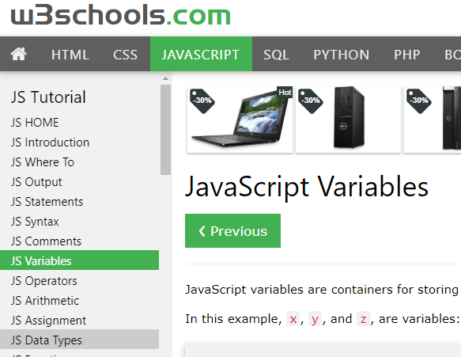

Read the short tutorials in the following:

Read JS Variables and JS Data Types as indicated above
Note: If you skipped the previous reading of the first 7 sections you will need to do these before reading the later sections. The new sections depend greatly on knowing what in in those previous sections.
As an alternative to the reading, you are welcome to use any other resources such as FreeCodeCamp Basic Javascript and go though the same topics. FreeCodeCamp is nice in that it has interactive examples and exercises that provide feedback and help as you try them.
Watch the following short video:
Naming Things in Code
This video will help you develop good naming habits. It goes beyond naming variables to more advanced things such as functions, classes, and modules. Even though you may not be familiar with these things (yet), the overall lessons here are important and apply to the naming of anything in your project (such as file and directory names). Developing good naming habits now will help you termendouly in the future, improving your ability to maintain, extend, and share your code/projects.